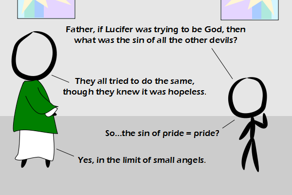

Comic JK 814
When I Feel Like It
⇤
<
?
>
⇥

⇤
<
?
>
⇥
Forum
.
RSS
.
Digg
.
Facebook
.
Reddit
.
Twitter
.
Stumbleupon
Enter your thoughts on number 814 here. Please, no spamming, trolling, phreaking, or tanned angels. Ponies >Hoof! (I love that word. Hoof. Clop clop clop hoof!) But but it's pronounced sine! >It's spelled "sine", too, but "sin" is a common abbreviation. >>True, but spelling hardly matters when spoken. >>>So did you have voice dictation read this comic out loud for you? >>>>No, that was done by my suspension of disbelief. >>>Do you pronounce "cos" as "cosine"? >>>>I do. I also pronounce "sec" as "secant". Also, |sinx-x|>0 unless x=0, so that equation is only true for "zero angles", not "small angles" >>>>>So logically it is only a sin of pride if there is no pride? >>>>>>And as an approximation, it is only valid for a small amount of pride. For larger pride, the sin of pride is significantly smaller than the pride itself. It can even get negative! >>>>>>>OK people, it was a pun, and pretty clever, if not completely logical. I usually groan at puns (why do I keep reading this comic?) but I couldn't help smiling at this one. >>>>>>>>verbal masochists love PUNishment >>>>>>>>>surely you mean aural masochists >>>>>>>>>*groan* asdf >>>>How do you pronounce csc then? "Coosk", "Cosec", "Cosecant" or some variation thereupon? >>>>>I say "Cosecant" >>>>oops. I forgot the mod: |sin(x mod pi/2)-x|>0 cos takes two people! >huh? i don't get it